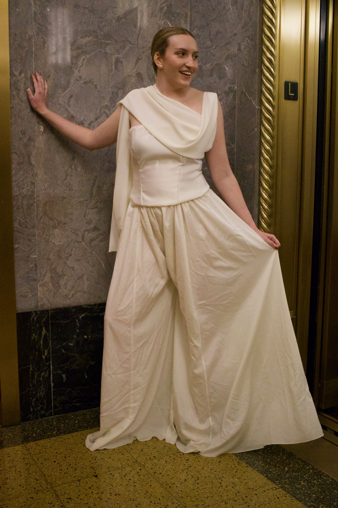
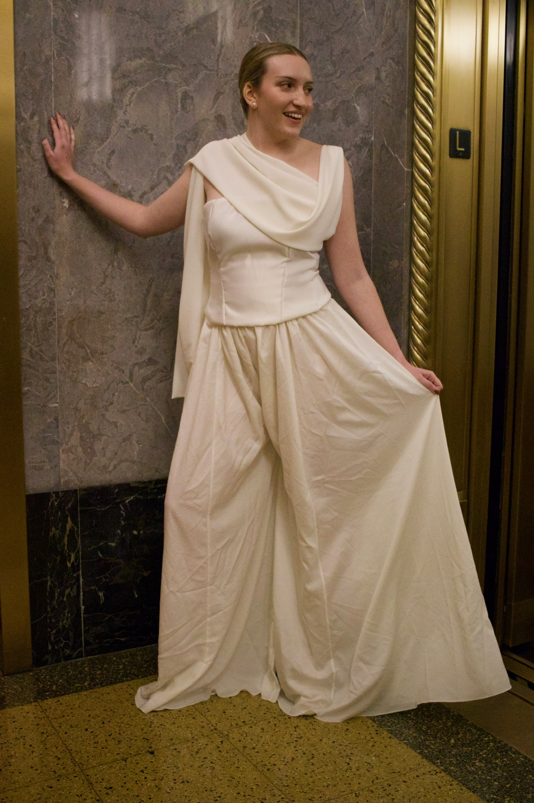

Nice to meet you! I’m a model based in NYC with a love for elegance, creativity, and all things fashion. My interest in modeling started early, from making
outfits for my dolls to doing hair and makeup for myself and my family. I also grew up dancing ballet, so stepping onto a runway feels like a natural
extension of the stage: graceful, expressive, and exciting.
My look is often described as classic and elegant, but I’m versatile and love exploring different aesthetics. So far, I’ve had the opportunity to model
fashion, commercial, runway, and editorial styles. Some of my favorite experiences include walking in Rise NYFW for JSJ, modeling the JSJ bridal collection,
appearing in Fordham’s Flash Mag for a streetwear shoot, and representing Fordham University in various promotional campaigns. Fun fact: my very first runway
experience was walking in an American Girl fashion show as a child!
I bring a creative, easygoing energy to every shoot, and I’m always excited to collaborate on unique projects. With a background in ballet, tennis, and
skiing, I have strong body awareness and form: especially helpful for movement-based or activewear modeling.\n
Outside of modeling, I’m a coder! I’m currently pursuing a master’s in data science at Fordham University, where I also earned my bachelor’s in computer
science. (Yes, I coded this website myself!) When I’m not modeling or studying, you’ll probably find me dancing, playing tennis, skiing, or walking around
NYC with a green tea boba.
My goal is simple: to be part of creative, inspiring projects and to bring professionalism, energy, and a sense of fun to every opportunity.\n
Let’s create something beautiful together!